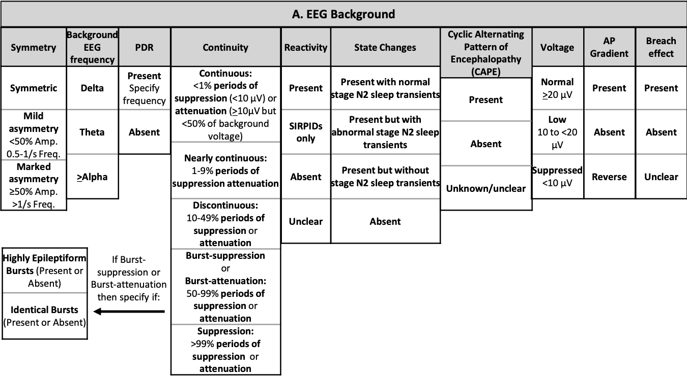
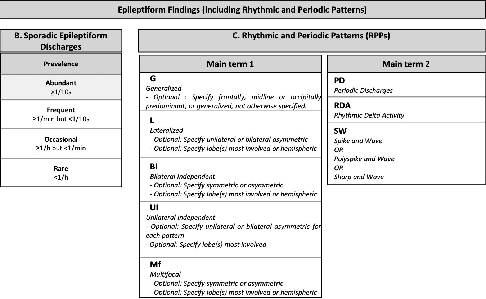
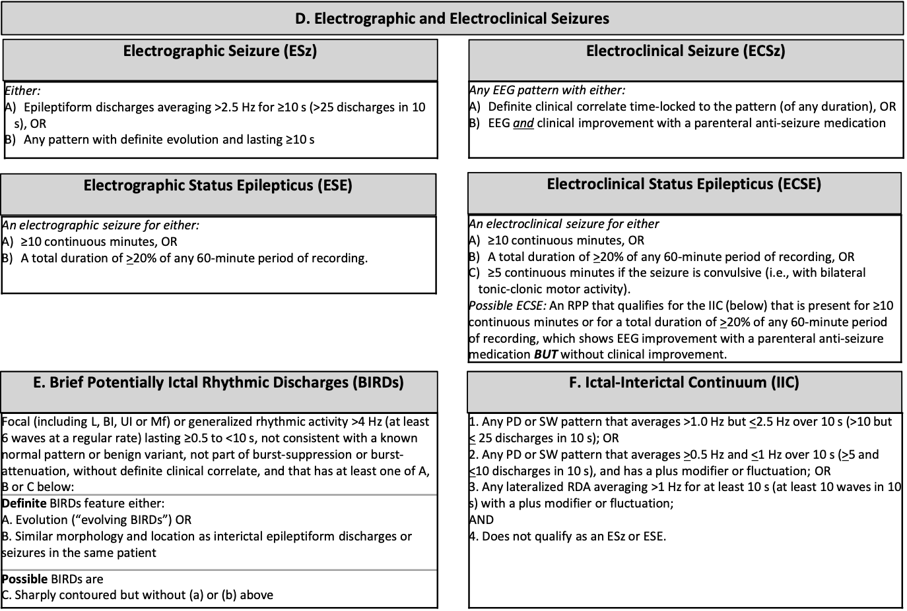
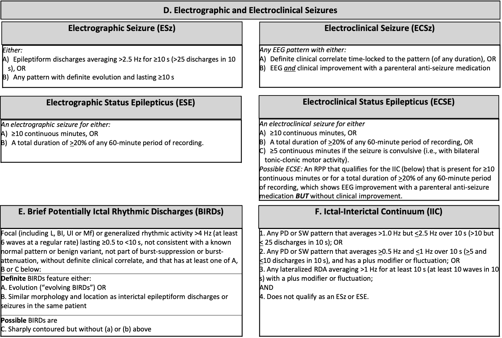

ACNS Criteria
ACNS Nomenclature Reference Charts
  

ACNS Standardized Critical Care EEG Terminology
A standardized approach to describe EEG patterns in critical care patients.
Download Full Reference PDF
ACNS Training Module
View the training presentation below (requires internet connection).